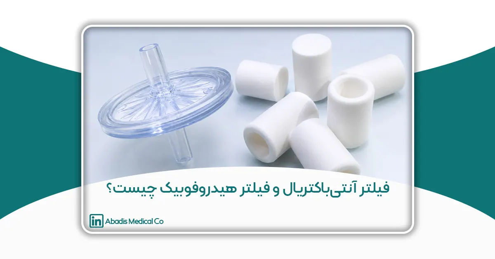
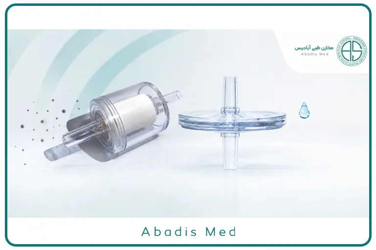

مقدمه
سیستمهای ساکشن پزشکی از تجهیزات ضروری در مراکز درمانی هستند و نقش مهمی در تخلیه خون، ترشحات، مایعات بیولوژیکی و سایر مواد از بدن بیمار ایفا میکنند. این سیستمها در اتاقهای عمل، بخشهای مراقبت ویژه (ICU و CCU)، اورژانس، اتاقهای زایمان، بخشهای بستری و بسیاری از اقدامات درمانی بهطور گسترده مورد استفاده قرار میگیرند. عملکرد صحیح آنها علاوه بر کمک به روند درمان، در حفظ ایمنی بیمار، جلوگیری از انتقال آلودگی و محافظت از تجهیزات پزشکی نیز اهمیت زیادی دارد.
در ظاهر، عملکرد یک سیستم ساکشن ساده به نظر میرسد؛ مایعات از طریق فشار منفی ایجادشده توسط دستگاه یا شبکه وکیوم بیمارستان جمعآوری میشوند و در یک مخزن نگهداری میشوند. اما در عمل، همزمان با انتقال مایعات، هوا نیز از داخل سیستم عبور میکند و همین موضوع میتواند در صورت نبود تجهیزات حفاظتی مناسب، مشکلاتی مانند ورود مایعات به سیستم خلأ، آلودگی تجهیزات، کاهش عملکرد دستگاه و حتی افزایش خطر انتشار عوامل بیماریزا را به همراه داشته باشد.
به همین دلیل، تولیدکنندگان تجهیزات پزشکی در سالهای اخیر از فناوریهای مختلفی برای افزایش ایمنی سیستمهای ساکشن استفاده کردهاند. در میان این فناوریها، فیلتر آنتیباکتریال (Antibacterial Filter) و فیلتر هیدروفوبیک (Hydrophobic Filter) از مهمترین اجزایی هستند که در بسیاری از سیستمهای مدرن به کار میروند.
اگرچه این دو فیلتر معمولاً در کنار یکدیگر استفاده میشوند، اما عملکرد و هدف طراحی آنها کاملاً متفاوت است. فیلتر آنتیباکتریال برای کاهش عبور میکروارگانیسمها در مسیر جریان هوا طراحی شده است، در حالی که فیلتر هیدروفوبیک با جلوگیری از عبور مایعات، از ورود خون و ترشحات به سیستم خلأ جلوگیری میکند و در بسیاری از مدلها، هنگام پر شدن مخزن یا کیسه، بهعنوان یک قطعکننده خودکار جریان نیز عمل میکند.
از آنجا که این دو فناوری گاهی با یکدیگر اشتباه گرفته میشوند، آشنایی با تفاوت آنها برای پزشکان، پرستاران، کارشناسان تجهیزات پزشکی، مسئولان کنترل عفونت و مدیران خرید مراکز درمانی اهمیت زیادی دارد. انتخاب صحیح تجهیزات میتواند علاوه بر افزایش ایمنی بیمار و کارکنان، عمر مفید دستگاههای ساکشن را نیز افزایش داده و هزینههای نگهداری و تعمیرات را کاهش دهد.
در این مقاله، با عملکرد فیلتر آنتیباکتریال و فیلتر هیدروفوبیک آشنا میشویم، تفاوتهای آنها را بررسی میکنیم و توضیح میدهیم که هر یک چه نقشی در افزایش ایمنی و کارایی سیستمهای ساکشن پزشکی دارند.
چرا سیستمهای ساکشن پزشکی به فیلتر نیاز دارند؟
برای درک اهمیت فیلترهای مورد استفاده در سیستمهای ساکشن، ابتدا باید با نحوه عملکرد این تجهیزات آشنا شویم.
در یک سیستم ساکشن، فشار منفی ایجادشده توسط پمپ یا شبکه وکیوم بیمارستان، خون، ترشحات و سایر مایعات را از بدن بیمار به سمت مخزن جمعآوری هدایت میکند. با این حال، تنها مایعات نیستند که در این مسیر حرکت میکنند؛ هوا نیز بهطور همزمان از داخل لولهها و مخزن عبور میکند تا فرآیند مکش بهصورت پیوسته ادامه یابد.
عبور همزمان هوا و مایعات باعث میشود که سیستم ساکشن با دو چالش مهم مواجه شود.
نخست، احتمال انتقال ذرات معلق، قطرات ریز (Droplets) و میکروارگانیسمها از طریق جریان هوا وجود دارد. اگر این ذرات بدون هیچ مانعی وارد مسیر خلأ شوند، علاوه بر آلودگی تجهیزات، ممکن است خطر انتشار عوامل بیماریزا نیز افزایش یابد.
دوم، در صورت پر شدن بیش از حد مخزن یا ایجاد کف و پاشش مایعات، احتمال ورود خون و سایر ترشحات به مسیر خلأ وجود دارد. چنین اتفاقی میتواند عملکرد دستگاه ساکشن را مختل کرده، به پمپ خلأ آسیب برساند و هزینههای تعمیر و نگهداری را بهطور قابلتوجهی افزایش دهد.
برای کاهش این خطرات، تولیدکنندگان تجهیزات پزشکی از فناوریهای مختلفی استفاده میکنند که مهمترین آنها فیلتر آنتیباکتریال و فیلتر هیدروفوبیک هستند. هر یک از این فیلترها وظیفه مشخصی بر عهده دارند و نمیتوان یکی را جایگزین دیگری دانست.
در ادامه، ابتدا با ساختار و عملکرد فیلتر آنتیباکتریال آشنا میشویم و سپس نقش فیلتر هیدروفوبیک و تفاوتهای این دو فناوری را بررسی خواهیم کرد.
فیلتر آنتیباکتریال چیست؟
فیلتر آنتیباکتریال (Antibacterial Filter) یکی از اجزای ایمنی در برخی سیستمهای ساکشن پزشکی است که با هدف کاهش عبور میکروارگانیسمها از مسیر جریان هوا طراحی شده است. این فیلتر معمولاً در قسمت بالایی مخزن یا در مسیر اتصال سیستم ساکشن به منبع خلأ قرار میگیرد و بهعنوان یک لایه محافظ میان مایعات جمعآوریشده و تجهیزات خلأ عمل میکند.
در زمان انجام ساکشن، علاوه بر خون، ترشحات یا سایر مایعات، مقدار قابلتوجهی هوا نیز از داخل سیستم عبور میکند. این جریان هوا ممکن است حامل ذرات بسیار ریز، قطرات معلق (Droplets) یا برخی میکروارگانیسمها باشد. اگر هیچ مانعی در مسیر وجود نداشته باشد، این ذرات میتوانند وارد مسیر خلأ شده و موجب آلودگی بخشهایی از سیستم شوند.
فیلتر آنتیباکتریال با استفاده از یک محیط فیلتراسیون متخلخل، بخشی از این ذرات و میکروارگانیسمها را به دام میاندازد و احتمال انتقال آنها به سمت تجهیزات ساکشن را کاهش میدهد.
البته باید توجه داشت که عملکرد این فیلتر به نوع ماده فیلتراسیون، اندازه منافذ، کیفیت ساخت و استانداردهای تولید آن بستگی دارد و تمامی فیلترهای موجود در بازار، کارایی یکسانی ندارند.
فیلتر آنتیباکتریال چگونه کار میکند؟
عملکرد این فیلتر بر پایه فیلتراسیون مکانیکی است. هنگامی که هوا از داخل فیلتر عبور میکند، ذرات بزرگتر از اندازه منافذ یا ذراتی که از طریق نیروهای فیزیکی به الیاف فیلتر جذب میشوند، در داخل ساختار فیلتر باقی میمانند.
در برخی محصولات پیشرفته، از چندین لایه فیلتراسیون استفاده میشود تا راندمان جذب ذرات افزایش یابد. این ساختار چندلایه میتواند در کاهش عبور برخی باکتریها و ذرات معلق مؤثر باشد، هرچند عملکرد دقیق آن به مشخصات فنی محصول بستگی دارد.
نکته مهم این است که فیلتر آنتیباکتریال برای جلوگیری از عبور مایعات طراحی نشده است. اگر خون یا ترشحات مستقیماً وارد این فیلتر شوند، ممکن است منافذ آن مسدود شده و عملکرد سیستم ساکشن مختل شود. به همین دلیل، این فیلتر معمولاً در کنار یک فیلتر هیدروفوبیک مورد استفاده قرار میگیرد.
مهمترین مزایای فیلتر آنتیباکتریال
استفاده از فیلتر آنتیباکتریال در سیستمهای ساکشن میتواند مزایای متعددی داشته باشد که مهمترین آنها عبارتاند از:
کاهش احتمال انتقال میکروارگانیسمها
مهمترین وظیفه این فیلتر، کاهش عبور برخی باکتریها و ذرات معلق موجود در جریان هوا است. این ویژگی میتواند به کاهش آلودگی تجهیزات و افزایش ایمنی سیستم کمک کند.
محافظت از تجهیزات خلأ
با کاهش ورود ذرات معلق و آلودگی به مسیر وکیوم، احتمال آلوده شدن بخشهای داخلی سیستم کاهش پیدا میکند و در نتیجه هزینههای نگهداری و سرویس تجهیزات نیز کمتر خواهد شد.
کمک به برنامههای کنترل عفونت
در بسیاری از مراکز درمانی، کاهش احتمال انتشار آلودگی یکی از اصول مهم کنترل عفونت است. استفاده از فیلترهای استاندارد میتواند در کنار سایر اقدامات حفاظتی، بخشی از این برنامه را تکمیل کند.
افزایش ایمنی کارکنان
هرچه احتمال انتشار ذرات آلوده در سیستم کمتر باشد، خطر مواجهه شغلی کارکنان نیز کاهش خواهد یافت. البته این موضوع جایگزین استفاده از تجهیزات حفاظت فردی (PPE) و رعایت دستورالعملهای کنترل عفونت نیست.
محدودیتهای فیلتر آنتیباکتریال
یکی از اشتباهات رایج این است که برخی تصور میکنند فیلتر آنتیباکتریال میتواند بهتنهایی از کل سیستم محافظت کند. در حالی که این فیلتر محدودیتهایی دارد و نباید عملکرد آن را بیش از حد انتظار دانست.
از جمله مهمترین محدودیتهای آن میتوان به موارد زیر اشاره کرد:
- برای جلوگیری از عبور مایعات طراحی نشده است.
- در صورت تماس مستقیم با خون یا ترشحات ممکن است عملکرد آن کاهش یابد.
- جایگزین فیلتر هیدروفوبیک یا مکانیزم قطع خودکار جریان نیست.
- عملکرد آن به کیفیت ساخت و استانداردهای تولید وابسته است.
به همین دلیل، در بسیاری از سیستمهای مدرن ساکشن، فیلتر آنتیباکتریال همراه با فیلتر هیدروفوبیک به کار میرود تا هر یک وظیفه تخصصی خود را انجام دهند.
فیلتر هیدروفوبیک چیست؟
فیلتر هیدروفوبیک (Hydrophobic Filter) یکی از مهمترین اجزای ایمنی در سیستمهای ساکشن پزشکی است که برای جلوگیری از عبور مایعات به سمت مسیر خلأ طراحی شده است.
واژه Hydrophobic به معنای آبگریز است. این ویژگی باعث میشود سطح فیلتر اجازه عبور آب، خون و سایر مایعات را ندهد، در حالی که هوا همچنان میتواند از آن عبور کند.
در شرایط عادی، هوا بهراحتی از میان منافذ فیلتر عبور میکند و سیستم ساکشن به عملکرد خود ادامه میدهد. اما اگر سطح مایع به فیلتر برسد، منافذ آن توسط مایع پوشانده شده و عبور هوا متوقف میشود. در نتیجه، جریان مکش نیز قطع میشود و از ورود مایعات به مسیر خلأ جلوگیری خواهد شد.
به همین دلیل، فیلتر هیدروفوبیک علاوه بر نقش حفاظتی، در بسیاری از سیستمها بهعنوان مکانیزم قطع خودکار جریان (Automatic Shut-off) نیز عمل میکند.
این ویژگی یکی از مهمترین تفاوتهای فیلتر هیدروفوبیک با فیلتر آنتیباکتریال است و نقش مهمی در محافظت از تجهیزات ساکشن و افزایش ایمنی سیستم دارد.
فیلتر هیدروفوبیک چگونه کار میکند؟
عملکرد فیلتر هیدروفوبیک بر پایه ویژگی آبگریزی (Hydrophobicity) مواد تشکیلدهنده آن است. این فیلترها معمولاً از غشاهای پلیمری ویژهای مانند PTFE (Polytetrafluoroethylene) یا سایر مواد آبگریز ساخته میشوند که اجازه عبور هوا را میدهند اما در برابر عبور مایعات مقاوم هستند.
در شرایط عادی، زمانی که سیستم ساکشن در حال کار است، هوا بهراحتی از منافذ ریز فیلتر عبور میکند و فشار منفی موردنیاز برای مکش حفظ میشود. اما اگر سطح مایع در مخزن یا کیسه ساکشن بیش از حد بالا بیاید و به فیلتر برسد، منافذ غشا توسط مایع مسدود میشوند.
در این حالت، عبور هوا متوقف شده و در نتیجه جریان مکش نیز قطع میشود. این فرآیند بهصورت کاملاً خودکار انجام میشود و از ورود خون، ترشحات یا سایر مایعات به مسیر خلأ و تجهیزات ساکشن جلوگیری میکند.
به همین دلیل، در بسیاری از منابع تخصصی، فیلتر هیدروفوبیک با عنوان Overflow Protection Filter یا Automatic Shut-off Filter نیز شناخته میشود.
چرا فیلتر هیدروفوبیک را «قطعکننده جریان» مینامند؟
یکی از رایجترین اصطلاحاتی که در بازار تجهیزات پزشکی برای این قطعه استفاده میشود، قطعکننده جریان (Shut-off Filter یا Flow Shut-off Device) است.
دلیل این نامگذاری بسیار ساده است. زمانی که مخزن یا کیسه ساکشن به حداکثر ظرفیت خود نزدیک میشود، فیلتر هیدروفوبیک با جلوگیری از عبور هوا، مسیر مکش را متوقف میکند. در نتیجه، دیگر امکان انتقال مایعات به سمت سیستم خلأ وجود نخواهد داشت.
در واقع، این قطعه مانند یک شیر ایمنی خودکار عمل میکند؛ بدون نیاز به برق، سنسور یا کنترل الکترونیکی، تنها با استفاده از ویژگیهای فیزیکی غشای آبگریز، از بروز یکی از مهمترین خطرات در سیستمهای ساکشن جلوگیری میکند.
این عملکرد چند مزیت مهم به همراه دارد:
- جلوگیری از ورود خون و ترشحات به دستگاه ساکشن
- محافظت از پمپ خلأ و سیستم وکیوم بیمارستان
- کاهش احتمال خرابی تجهیزات
- کاهش هزینههای تعمیر و نگهداری
- افزایش ایمنی کارکنان و محیط درمان
به همین دلیل، امروزه وجود مکانیزم قطعکننده جریان در بسیاری از سیستمهای ساکشن استاندارد، یکی از الزامات ایمنی محسوب میشود.
مهمترین مزایای فیلتر هیدروفوبیک
استفاده از فیلتر هیدروفوبیک مزایای متعددی دارد که فراتر از جلوگیری از ورود مایعات به سیستم است.
جلوگیری از ورود مایعات به سیستم خلأ
اصلیترین وظیفه این فیلتر، جلوگیری از عبور خون، ترشحات و سایر مایعات بیولوژیکی به سمت دستگاه ساکشن یا شبکه وکیوم بیمارستان است.
این موضوع علاوه بر حفظ عملکرد سیستم، از آلودگی تجهیزات نیز جلوگیری میکند.
محافظت از تجهیزات پزشکی
ورود مایعات به پمپ خلأ میتواند باعث ایجاد خوردگی، آلودگی داخلی، کاهش قدرت مکش و حتی خرابی کامل تجهیزات شود.
وجود فیلتر هیدروفوبیک احتمال بروز این مشکلات را به میزان قابلتوجهی کاهش میدهد.
افزایش ایمنی کارکنان
اگر مایعات وارد مسیر خلأ شوند، احتمال نشت، پاشش و آلودگی محیط افزایش پیدا میکند.
جلوگیری از این اتفاق، خطر مواجهه کارکنان درمان با مایعات بالقوه عفونی را نیز کاهش میدهد.
کمک به کنترل عفونت
اگرچه وظیفه اصلی فیلتر هیدروفوبیک جلوگیری از عبور مایعات است، اما کاهش انتشار ترشحات آلوده در سیستم میتواند به اجرای بهتر برنامههای کنترل عفونت نیز کمک کند.
تفاوت فیلتر آنتیباکتریال و فیلتر هیدروفوبیک چیست؟
با وجود اینکه این دو فیلتر معمولاً در کنار یکدیگر استفاده میشوند، اما عملکرد، ساختار و هدف طراحی آنها کاملاً متفاوت است.
| ویژگی | فیلتر آنتیباکتریال | فیلتر هیدروفوبیک |
|---|---|---|
| وظیفه اصلی | کاهش عبور باکتریها و ذرات معلق | جلوگیری از عبور مایعات |
| عملکرد | فیلتراسیون هوا | جلوگیری از عبور مایع و قطع جریان |
| محل استفاده | مسیر هوای سیستم ساکشن | مسیر خلأ یا بالای مخزن |
| محافظت از دستگاه | در برابر ذرات و آلودگی هوا | در برابر ورود خون و ترشحات |
| قابلیت قطع جریان | ندارد | دارد |
| جلوگیری از سرریز | ندارد | بله |
| نقش در کنترل عفونت | کاهش انتقال برخی میکروارگانیسمها | کاهش آلودگی ناشی از نشت مایعات |
بنابراین، این دو فیلتر جایگزین یکدیگر نیستند، بلکه هر یک وظیفه مشخصی دارند و در کنار هم یک سیستم ایمنتر ایجاد میکنند.

آیا فیلتر هیدروفوبیک میتواند جایگزین فیلتر آنتیباکتریال شود؟
پاسخ کوتاه خیر است.
اگرچه برخی فیلترهای هیدروفوبیک پیشرفته ممکن است تا حدی در برابر عبور ذرات نیز مؤثر باشند، اما وظیفه اصلی آنها جلوگیری از عبور مایعات است، نه فیلتراسیون میکروبی.
از طرف دیگر، فیلتر آنتیباکتریال نیز برای جلوگیری از ورود خون یا ترشحات طراحی نشده است و در صورت تماس مستقیم با مایعات، ممکن است عملکرد خود را از دست بدهد.
به همین دلیل، در بسیاری از سیستمهای ساکشن استاندارد، تولیدکنندگان از فیلترهای ترکیبی (Hydrophobic + Antibacterial Filters) استفاده میکنند تا هر دو عملکرد بهطور همزمان در یک مجموعه فراهم شود.
این طراحی علاوه بر افزایش ایمنی، موجب کاهش احتمال خرابی سیستم و بهبود عملکرد کلی تجهیزات میشود.
اشتباهات رایج درباره فیلترهای ساکشن
در بسیاری از مراکز درمانی و حتی در میان برخی فعالان حوزه تجهیزات پزشکی، برداشتهای نادرستی درباره عملکرد این فیلترها وجود دارد. آگاهی از این موارد میتواند به انتخاب صحیح تجهیزات و استفاده ایمنتر از آنها کمک کند.
تصور اینکه هر دو فیلتر عملکرد یکسانی دارند
اگرچه فیلتر آنتیباکتریال و فیلتر هیدروفوبیک هر دو در مسیر سیستم ساکشن قرار میگیرند، اما وظایف کاملاً متفاوتی دارند و نمیتوان یکی را جایگزین دیگری دانست.
تصور اینکه فیلتر هیدروفوبیک فقط یک فیلتر ساده است
در واقع، این فیلتر علاوه بر جلوگیری از عبور مایعات، در بسیاری از سیستمها نقش یک مکانیزم ایمنی قطعکننده جریان را نیز ایفا میکند و از آسیب به تجهیزات جلوگیری میکند.
نادیده گرفتن کیفیت فیلتر
عملکرد فیلترها به کیفیت مواد اولیه، فناوری ساخت و استانداردهای تولید بستگی دارد. استفاده از محصولات غیراستاندارد ممکن است سطح ایمنی سیستم را کاهش دهد.
چگونه یک فیلتر استاندارد انتخاب کنیم؟
انتخاب یک فیلتر مناسب تنها به نام محصول یا قیمت آن محدود نمیشود. در سیستمهای ساکشن پزشکی، کیفیت فیلتر میتواند تأثیر مستقیمی بر ایمنی بیمار، عملکرد تجهیزات و میزان حفاظت از کارکنان درمانی داشته باشد. به همین دلیل، هنگام انتخاب این قطعات باید به مجموعهای از ویژگیهای فنی و استانداردهای تولید توجه شود.
مهمترین معیارهای انتخاب عبارتاند از:
کیفیت مواد اولیه
فیلتر باید از مواد پلیمری پزشکی (Medical Grade) تولید شده باشد تا در برابر رطوبت، تغییرات فشار و تماس با مایعات بیولوژیکی، عملکرد پایدار و قابلاعتمادی داشته باشد.
در فیلترهای هیدروفوبیک، استفاده از غشاهای باکیفیت و آبگریز اهمیت ویژهای دارد؛ زیرا این بخش مستقیماً مسئول جلوگیری از ورود مایعات به سیستم خلأ است.
راندمان فیلتراسیون
در فیلترهای آنتیباکتریال، میزان کارایی در جذب ذرات و میکروارگانیسمها یکی از مهمترین شاخصهای کیفیت محسوب میشود. این ویژگی باید بر اساس آزمونهای معتبر و مشخصات فنی ارائهشده توسط تولیدکننده ارزیابی شود.
عملکرد مطمئن مکانیزم قطع جریان
در فیلترهای هیدروفوبیک، عملکرد صحیح مکانیزم قطع جریان اهمیت زیادی دارد. این فیلتر باید در زمان رسیدن مایعات به سطح مشخص، بدون تأخیر مسیر عبور هوا را مسدود کند و از ورود مایعات به دستگاه جلوگیری نماید.
سازگاری با سیستم ساکشن
ابعاد، نوع اتصال و مشخصات فنی فیلتر باید با سیستم ساکشن مورد استفاده در مرکز درمانی سازگار باشد. استفاده از قطعات ناسازگار ممکن است باعث کاهش قدرت مکش یا اختلال در عملکرد سیستم شود.
تولید مطابق استانداردهای تجهیزات پزشکی
محصول باید مطابق استانداردهای معتبر تجهیزات پزشکی تولید شده باشد و اطلاعات فنی آن بهصورت شفاف توسط تولیدکننده ارائه شود. وجود مستندات مربوط به کنترل کیفیت و قابلیت ردیابی محصول نیز از دیگر شاخصهای مهم در انتخاب تجهیزات پزشکی است.
نقش فیلترهای آنتیباکتریال و هیدروفوبیک در کنترل عفونت
یکی از اهداف اصلی استفاده از تجهیزات استاندارد در مراکز درمانی، کاهش خطر انتقال عوامل بیماریزا و حفاظت از کارکنان، بیماران و تجهیزات است. اگرچه کنترل عفونت مجموعهای از اقدامات شامل رعایت بهداشت دست، استفاده از تجهیزات حفاظت فردی (PPE)، ضدعفونی سطوح و مدیریت صحیح پسماندهای پزشکی را در بر میگیرد، اما طراحی مناسب تجهیزات نیز نقش مهمی در این فرآیند ایفا میکند.
فیلتر آنتیباکتریال با کاهش عبور برخی ذرات و میکروارگانیسمها در مسیر جریان هوا، میتواند به کاهش آلودگی سیستم کمک کند. از سوی دیگر، فیلتر هیدروفوبیک با جلوگیری از ورود خون و ترشحات به مسیر خلأ، احتمال آلودگی تجهیزات و انتشار مایعات بالقوه عفونی را کاهش میدهد.
استفاده همزمان از این دو فناوری در یک سیستم ساکشن استاندارد میتواند مزایای زیر را به همراه داشته باشد:
- کاهش احتمال آلودگی تجهیزات ساکشن
- محافظت از سیستم خلأ بیمارستان
- کاهش خطر نشت و سرریز مایعات
- کاهش تماس کارکنان با ترشحات آلوده
- کمک به اجرای بهتر برنامههای کنترل عفونت
- افزایش ایمنی فرآیند جمعآوری مایعات پزشکی
البته باید توجه داشت که هیچ فیلتری بهتنهایی جایگزین رعایت دستورالعملهای کنترل عفونت، آموزش کارکنان یا استفاده از تجهیزات حفاظت فردی نیست. این فناوریها تنها بخشی از یک سیستم جامع ایمنی در مراکز درمانی محسوب میشوند.
آینده فناوری فیلترهای مورد استفاده در سیستمهای ساکشن
با پیشرفت فناوری تجهیزات پزشکی، طراحی فیلترهای مورد استفاده در سیستمهای ساکشن نیز بهطور مداوم در حال توسعه است. تولیدکنندگان تلاش میکنند محصولاتی با راندمان بالاتر، مقاومت بیشتر و عملکرد ایمنتر ارائه دهند تا علاوه بر محافظت از تجهیزات، نیازهای روزافزون مراکز درمانی را نیز برآورده کنند.
برخی از روندهای نوین در این حوزه عبارتاند از:
- استفاده از غشاهای پیشرفته با قابلیت فیلتراسیون بالاتر
- طراحی فیلترهای ترکیبی (Hydrophobic + Antibacterial)
- کاهش مقاومت در برابر جریان هوا برای حفظ قدرت مکش
- بهبود مکانیزمهای قطع خودکار جریان
- استفاده از مواد مقاومتر در برابر فشار، رطوبت و تغییرات دمایی
- افزایش سازگاری با سیستمهای ساکشن مدرن و مخازن یکبارمصرف
این پیشرفتها میتوانند علاوه بر افزایش ایمنی، موجب کاهش هزینههای نگهداری تجهیزات و بهبود عملکرد سیستمهای ساکشن در مراکز درمانی شوند.
جمعبندی
فیلتر آنتیباکتریال و فیلتر هیدروفوبیک هر دو از اجزای مهم سیستمهای ساکشن پزشکی هستند، اما هر یک وظیفه متفاوتی بر عهده دارند و نباید با یکدیگر اشتباه گرفته شوند.
فیلتر آنتیباکتریال با هدف کاهش عبور برخی باکتریها و ذرات معلق در مسیر جریان هوا طراحی شده است، در حالی که فیلتر هیدروفوبیک با جلوگیری از عبور مایعات، از ورود خون و ترشحات به مسیر خلأ محافظت میکند و در بسیاری از سیستمها بهعنوان یک قطعکننده خودکار جریان نیز عمل میکند.
استفاده همزمان از این دو فناوری در یک سیستم ساکشن استاندارد، علاوه بر افزایش ایمنی بیمار و کارکنان درمانی، از تجهیزات خلأ نیز محافظت کرده و به اجرای بهتر برنامههای کنترل عفونت کمک میکند.
در نهایت، انتخاب فیلترهای باکیفیت از تولیدکنندگان معتبر، بررسی مشخصات فنی محصول و اطمینان از انطباق آن با استانداردهای تجهیزات پزشکی، از مهمترین عوامل در دستیابی به عملکرد ایمن و قابلاعتماد سیستمهای ساکشن است.
منابع (References)
برای افزایش اعتبار علمی مقاله، پیشنهاد میشود منابع زیر در پایان متن درج شوند:
- World Health Organization (WHO). Safe Management of Wastes from Health-Care Activities (Blue Book), 2nd Edition.
- Centers for Disease Control and Prevention (CDC). Guidelines for Environmental Infection Control in Health-Care Facilities.
- Occupational Safety and Health Administration (OSHA). Bloodborne Pathogens Standard (29 CFR 1910.1030).
- ISO 10079-1. Medical Suction Equipment – Electrically Powered Suction Equipment.
- ISO 80369 Series. Small-bore Connectors for Liquids and Gases in Healthcare Applications.
- Association for the Advancement of Medical Instrumentation (AAMI). Medical Suction Equipment Guidelines.
- Association for Professionals in Infection Control and Epidemiology (APIC). Infection Prevention and Control Resources.
- PubMed Indexed Articles on Hydrophobic Filters, Antibacterial Filters, Medical Suction Systems, and Infection Control.
- European Centre for Disease Prevention and Control (ECDC). Guidance on Infection Prevention and Control.